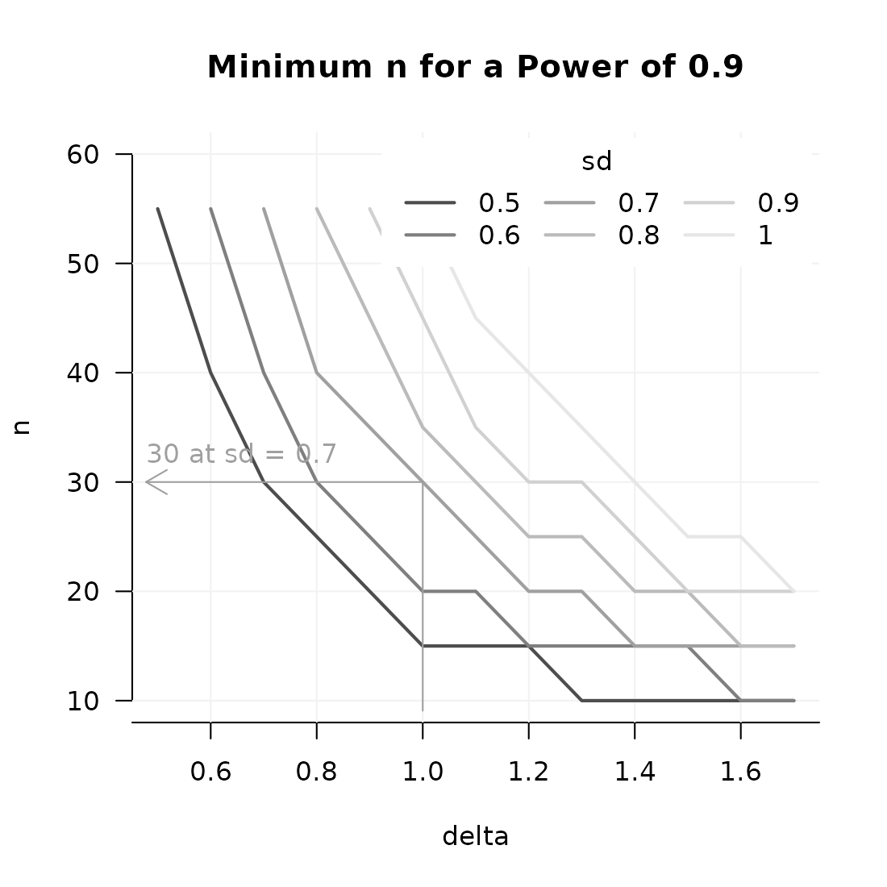

Introduction to the typical use of powergrid
The powergrid package offers a number of functions that facilitate exploring the statistical power of a study. In a typical use case (which I also show in this vignette) you want to explore the relation between statistical power, sample size, the effect size of interest and the assumed variability of the data. The interrelation of these parameters is defined by the assumed distributional form of your data, and the statistical test that you aim to perform.
This package does not dictate any of the above ingredients for you. It just allows you to evaluate a function at a grid of parameters and visualize the interrelation in plots that are fine-tuned for analyses of power and sample size. You may, however use it for very different purposes. An example close to a power analysis would be an analysis of the precision you may expect of a study design. As a more remote application, you can think of a coverage study for different confidence intervals. Or an exploration for planning recruitment under various scenarios.
Functions covered
T his vignette covers the following functions of
powergrid
-
PowerGridfor evaluating the power across a grid, with and without simualtion -
Examplefor inspecting the relation between power and sample size in a specific scenario -
PowerplotGraphical exploration of power under different scenarios -
GridPlotGraphical exploration of power under even more scenarios
Installing the current version from Github
To install the current version from github, evaluate the following line of R code:
devtools::install_github("SwissClinicalTrialOrganisation/powergrid",
ref = "v0.1.0", # the current beta
build_vignette = TRUE)Typical use case
I describe two basic use cases here. Both concern studying the relation between power, sample size, and two further parameters. In the first situation, a function for calculating the power is available. In the second situation, the power needs to be found through (re-)sampling.
Power for a t-test on a normal variable
Assume we aim to collect data in a two-armed RCT and plan to perform a simple t-test. In this situation, the situation concerning power can be summarized in the following ingredients:
- total sample size
- effect size of interest
- expected standard deviation in the study arms
- the objective (planned statistical test)
I use the function PowerGrid to evaluate the situation
sketched above. This is done as follows
sse_pars = list( # a simple list
n = seq(from = 10, to = 60, by = 5), # sample size
delta = seq(from = 0.6, to = 1.6, by = 0.1), # effect size
sd = seq(.5, 1.5, .2) # variability
)
PowFun <- function(n, delta, sd){
ptt = power.t.test(n = n/2,
delta = delta,
sd = sd,
sig.level = 0.05)
return(ptt$power)
}
power = PowerGrid(pars = sse_pars, fun = PowFun)
summary(power)
#> Object of class: power_array
#>
#> Range of values: [0.08, 1]
#> Evaluated at:
#> n 10, 15, 20, 25, 30, 35, 40, 45, 50, 55, 60
#> delta 0.6, 0.7, 0.8, 0.9, 1, 1.1, 1.2, 1.3, 1.4, 1.5,
#> delta 1.6
#> sd 0.5, 0.7, 0.9, 1.1, 1.3, 1.5In the code above, the first 3 ingredients are prepared as a little
list of parameters pars. The third ingredient, the
objective, is prepared as a function PowFun. Note these are
simple base R objects. Note further, that the names of the elements in
the list pars match the names of the function arguments in
PowFun.
Once that is set, in the third part of the chunk above, PowerGrid is
called with the sse_pars and the PowFun for arguments pars and fun,
respectively. The result is an array with class
power\_array. You can use it as any array, but it is built
to be used in some neat functions of PowerGrid.
Finding n for a certain set of assumptions
First, you may want to calculate the minimal n required to achieve,
for example, a power of 90%, for detecting a effect size of 0.8,
assuming the standard deviation in your sample will be 0.9. To find this
n, use the function Example:
Example(power, # the object (power_array) I created above
example = list(delta = .8, sd = .9), # at which settings do I want to
# calculate n?
target = .9) # what is my target power?
#> ================================================
#> To achieve the target of at least 0.9 assuming
#> delta = 0.8
#> sd = 0.9,
#> the minimal required n = 60
#> ------------------------------------------------
#> Description: Method "step" was used to find the
#> lowest n in the searched grid that yields a
#> target (typically power) of at least 0.9.
#> ================================================The printed result of Example should speak for itself. Note, however,
that the wording “target” in both the function argument and the printed
result may be a bit vague. ‘Why not “power”?’, you may ask. The reason
is, that there is nothing that keeps you from optimizing other things
with the functions in powergrid. Indeed, instead of finding
a target power, you may be looking for a target precision.
If you save the output of Example, this is a list containing the relevant information in a reusable form:
sse_example = Example(power, example = list(delta = .8, sd = .9), target = .9)
str(sse_example) # a list
#> List of 7
#> $ requested_example:List of 2
#> ..$ delta: num 0.8
#> ..$ sd : num 0.9
#> $ objective : chr "achieve target or higher"
#> $ target : num 0.9
#> $ required_name : chr "n"
#> $ required_value : num 60
#> $ searched : chr "min"
#> $ method : chr "step"
#> - attr(*, "class")= chr "power_example"Exploring the uncertainty about power
The example that was calcaulted above does not reflect the
uncertainty about my study. I set sd to .9, but I do not really know
what SD to expect. And I may want to explore how my power depends on the
effect size I want to detect. To explore the uncertainty about power in
a study design study, powergrid offers two plotting
functions: PowerPlot and GridPlot.
PowerPlot
First, I can plot the required n for different effect sizes and a chosen SD to achieve a certain power.
Below, I show how to do this when I aim to focus on the assumption that the standard deviation equals .9. In the example below, I want to point at the effect size that I hope to be able to show, which is 1. The figure shows “isolines” connecting points where power is .8, .9, and .95.
PowerPlot(
power, # the power_array containing power estimates
slicer = list(sd = .9), # "cut out" the relevant slice from power.
example = list(delta = 1) # draw an arrow pointing at the situation at delta = 1
)
Some things to note:
- You need to “slice out” one plain from your power_array. In this
case, this the slice where
sd = .9. The slice has the form of the figure: delta by n. - There is nothing that keeps you from slicing out a plain where
delta = .8and show how the relation between power and n depends on the standard deviation. Or slicing out a plain wheren = 50(maybe that’s considered feasible for your study project), and see how power behaves as a function of delta and sd. - You can add additional examples, either by increasing the the length
of the vector in the argument to example, (e.g.,
example = list(delta = c(1, 1.2)))or by using the higher level plotting functionAddExample. The latter allows you more flexibility, like setting different colors or line types. - There are many options in PowerPlot and AddExample that you may want to learn about in the help files.
GridPlot
The figure created by PowerPlot can only show the
interplay of two variables and power. GridPlot often offers a more
insightful picture, in particular when, as in this example, we have more
than 2 dimensions in our pars argument.
The code below shows how to plot the interplay between n, delta and sd when the goals is the achieve 90% power.
GridPlot(power,
target = .9, # you need to choose one target level of power
example = list(delta = 1, sd = .9)) # defined by two parameters now.
Note that there are many options in this plot. See the help file of
GridPlot for more info.
Power evaluation using simulation and resampling
Assume we have about the same situation as above, but we do not have a simple solution to calculate the power: we only have a limited pilot data set that looks as follows:
pilot_scores = c(2.1, 4.3, 2.3, 5.2, 1.9, 8.3, 7, 2.6, 2.4, 3.2, 2.1, 2.8, 3.4)Since we do not really understand the distribution (it looks pretty right-skewed), we plan to perform a Mann-Whitney U-test. We do not want to simply simulate, but draw from our pilot sample to mimic the variability and distributional form. We do have a clear idea about effect size (somewhere in the range of .5 and 2). The following code my be our approach to the exploration of power:
sse_pars = list(
n = seq(10, 100, 20),
delta = seq(.5, 2, .2)) # only effect size
PowFun = function(n, delta, pilot_data){
arm_1 = sample(pilot_data, n, replace = TRUE)
arm_2 = sample(pilot_data, n, replace = TRUE) + delta
significant = wilcox.test(arm_1, arm_2)$p.value < .05
return(significant) # each call of this function gives significant either TRUE
# or FALSE
}
power = PowerGrid(pars = sse_pars,
fun = PowFun,
more_args = list(pilot_data = pilot_scores), # pass the pilot
# data on to the
# fun argument
n_iter = 99) # we need to iterate over simulated experiemtns
# to get a power. I would take a higher value
# than 99; this is to keep the example quick.
summary(power)
#> Object of class: power_array
#> Containing summary over 99 iterations,
#> summarized by function `mean` (for function
#> definition, see attribute `summary_function`).
#> Range of values: [0.16, 1]
#> Evaluated at:
#> n 10, 30, 50, 70, 90
#> delta 0.5, 0.7, 0.9, 1.1, 1.3, 1.5, 1.7, 1.9
PowerPlot(power)
A couple of notes:
- The power in the example above is calculated by simulating TRUE’s
and FALSE’s for significance. These were then automatically summarized
by
meanto yield the power. You may, however, want to keep the simulated outcomes of your function. To do so, setsummarize = FALSE. If you choose to keep the individual iterations, be aware that plotting functions andExampleautomatically summarize these taking the mean. You can, however, choose a differentsummary_function. - There are a range of graphical options, including the labeling of axes and lines.
- As in PowerPlot, any dimension of the
power_arraymay be represented by the x-axis, y-axis, and lines.